Suricata IDS Instrument
Generic information regarding Suricata
Suricata is a free and open source, mature, fast and robust network threat detection engine. The Suricata engine is capable of real time intrusion detection (IDS), inline intrusion prevention (IPS), network security monitoring (NSM) and offline pcap processing. Suricata inspects the network traffic using a powerful and extensive rules and signature language, and has powerful Lua scripting support for detection of complex threats. With standard input and output formats like YAML and JSON integrations with tools like existing SIEMs, Splunk, Logstash/Elasticsearch, Kibana, and other database become effortless. Suricata’s fast paced community driven development focuses on security, usability and efficiency. The Suricata project and code is owned and supported by the Open Information Security Foundation (OISF), a non-profit foundation committed to ensuring Suricata’s development and sustained success as an open source project.
The SensorFleet integration
Suricata Instrument has been tightly integrated into SensorFleet’s platform. We provide an easy way for system administrators to deploy Suricata IDS instances in the network. Rule Lists can be managed using either Rule Manager or Rule Importer instruments without resorting into a command line interface, as is the usual approach for plain Suricata installations.
Suricata IDS instrument properties
| Instrument developer | SensorFleet Oy |
| Network access type | Passive |
| Required interfaces | Monitored network (mirror-bridge, receive) |
| Instrument dependencies | None |
| Related Instruments | Rule Manager, Rule Importer |
| Data retention | The latest rulelists are stored at Suricata Instrument persistent data. Events are exported to Sensor and respect Sensor’s data retention rules. |
| Management UI | No |
| Performance | Suricata Instrument should easily handle several gigabits of traffic on a F-Probe hardware on a typical traffic profile. |
Example use cases
A.K.A. pröystäilen mermaidilla t. keitsi

Contact us
Sami Petäjäsoja
+358 40 5030745
contact@sensorfleet.com
© SensorFleet Oy
Business ID: 2884312-2
Funded by

 

Vesihiisi project develops an open and scalable platform, SensorFleet, for network level cyber security monitoring. Platform enables emergence of an open ecosystem for development and distribution of cyber security monitoring capabilities. SensorFleet prototype will be further developed to production level maturity in this project.